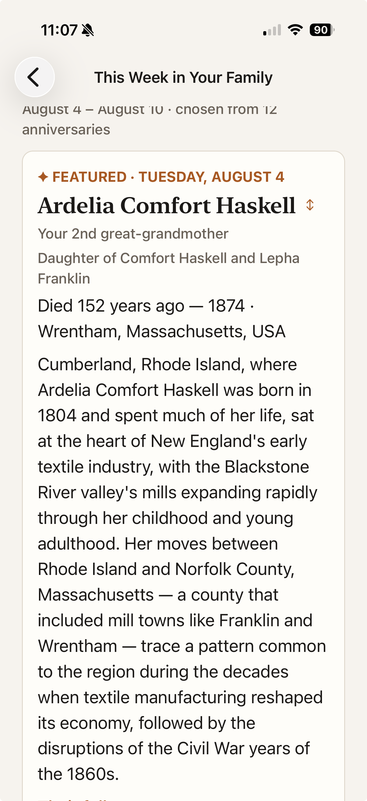

The weekly digest: the anniversaries — births and deaths — that fall in the next seven days, with one life featured and placed in its historical moment.
How you get here: from the Home tab’s This Week card, or from the Sunday morning notification. The week runs from today through the next seven days.

1 2 3 4 5 6Below the note, “Their full story ›” opens the person’s page. The rest of the week’s anniversaries follow as plain one-line cards — same information, no ceremony, every card tappable. A long featured story simply pushes them below the fold, as here.
On the You tab, Weekly reminder arms a Sunday-morning notification carrying the week’s top anniversary. Visiting This Week re-arms next week’s with fresh content.